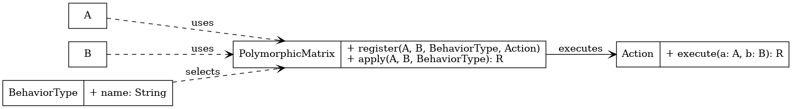
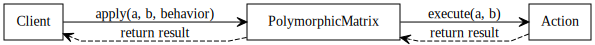

Intent
Enable behavior selection based on a combination of two runtime types and a behavior context, in a way that is declarative, extensible, and avoids the verbosity and asymmetry of the Visitor pattern.
Also Known As
- Multi-Type Dispatch Table
- Behavioral Matrix
- Symmetric Strategy Grid
Motivation
Traditional polymorphism supports dispatch based on a single dynamic type. However, real-world problems often require logic that depends on two interacting types and a context. The Visitor pattern simulates double dispatch but is verbose, asymmetrical, and scales poorly when new types or behaviors are introduced.
The Polymorphic Matrix externalizes this logic into a data structure that can be queried at runtime to resolve the appropriate behavior cleanly.
Structure
The core structure consists of:
- Type A and Type B: the dynamic participants (e.g. Animal and Food)
- BehaviorType: the context of interaction (e.g. EAT, SNIFF)
- PolymorphicMatrix: a registry mapping (A, B, BehaviorType) to an action function
- Action: the business logic to execute
Participants
- A: First participant in the interaction (e.g. Animal)
- B: Second participant (e.g. Food)
- BehaviorType: The kind of behavior applied (e.g. EAT)
- PolymorphicMatrix: Holds and resolves the behavior function
- Action: A function executed for a given triplet
Consequences
- ✅ Clean separation of behavior logic from domain types
- ✅ Fully extensible without modifying existing types
- ✅ Avoids the rigidity and verbosity of Visitor
- ⚠️ May grow large if combinations are numerous
- ⚠️ Requires explicit registration of all valid cases
Java Example
matrix.register(Cat.class, Fish.class, BehaviorType.EAT,
(cat, fish) -> "The cat eats the fish.");
matrix.apply(new Cat(), new Fish(), BehaviorType.EAT);Sequence Diagram
This sequence diagram illustrates how a client invokes the apply() method on the PolymorphicMatrix, which looks up the appropriate Action and delegates execution, returning the result.